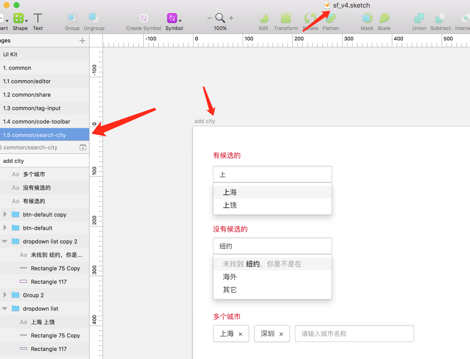

加入SegmentFault后果然接触了很多有趣的新技术，比如twig，比如docker，比如coffeescript
最近接到个需求需要修改城市的input输入，需要达到这个效果，

咋一看不难的好像，但是问题是SegmentFault这种输入组件全都被封装过，因为很多这种输入是基于标签的，比如技术类别标签、知识领域标签、学校标签等等，必须要在下拉列表中选中并加一个标签上去，所以手哥(leader)写了一个叫做typeHelper的组件
这个组件主要干了这些事
- 判断输入是否合法
- 从后台拉取数据，根据类别什么的再做个标签分类什么的
- 重写键盘事件，比如向上、向下、回车，需要能够选定相应的标签
- 选定后要向后台发送post请求
这个组件，没错，是用coffeeScript写的
然而，我第一次接触coffeeScript，但是我会python啊，所以直接配好gulp上手调了
…然后我发现果然JS还是不要太像python的好，虽然看起来似乎很简洁，但是！我真没觉得可读性增加啊
我根本就没办法知道它的一个函数的结束在哪，我也不知道这个变量的作用域到哪个地方，遇到回调函数就更可怕了，我真的不知道它怎么开始，怎么结束
Coffeescript的函数调用不需要加括号，一行的结束不需要加分号，if,then代码块靠缩紧表示，支持and，支持is not
if selectedItem and selectedItem.id != -1 and !( _.find self.result, (r)-> return r.id == selectedItem.id) |
相当pythonic，再加上underscore，简直各种一行程序玩出花，还好有visual code的协助，我最终还是差不多弄懂了各个函数的功能
另外coffeescript有个特性是，它无论如何都会为你补上return！
一般它会找到最后一行变量，然后return这个变量，我觉得这里可能是会有坑的地方。
最后我在这个插件增加了一个叫emptyDefault的属性，用来指明如果没有查找到数据应该显示的默认条目，这样以后遇到不是城市的选择，也可以调用这个接口
另外这个插件还有拓展插件，叫helpTyperExtend，我在里面针对城市标签增加了一个方法，主要就是把tips和default传进去
大功告成，接下来就是得把所有用到城市标签选择的地方加上这个拓展插件的方法。
感觉果然js模块化还是非常有用的，只是coffeescript实在有点不太适合js了，可能还是typescript这个方向好点吧…